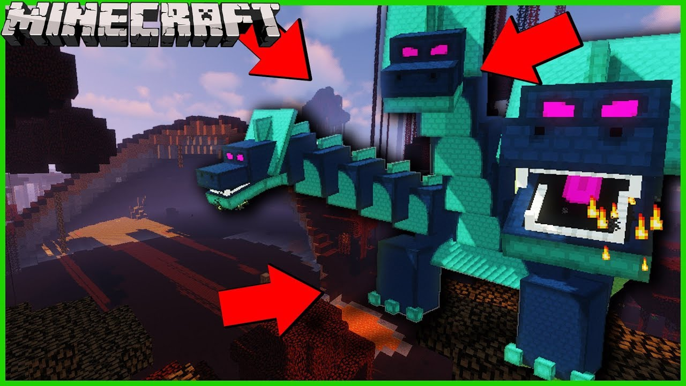

Гидра - мифическое существо, известное своими многими головами и ядовитым дыханием.
Для победы над гидрой рекомендуется использовать оружие с противоядием и атаковать ее головы одновременно.
После победы над гидрой игрок может получить ценные предметы, такие как драконические чешуи и драконический лук.
Вот несколько интересных фактов о гидре: